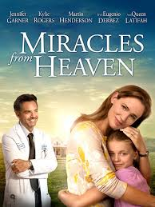
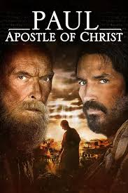

With great jobs, a beautiful daughter (Alena Pitts) and a dream house, the Jordans seem to have it all. Appearances can be deceiving, however, as husband Tony (T.C. Stallings) flirts with temptation and wife Elizabeth (Priscilla Shirer) becomes increasingly bitter, crumbling under the strain of a failing marriage. Their lives take an unexpected turn for the better when Elizabeth meets her newest client, Miss Clara (Karen Abercrombie), who encourages the couple to find happiness through prayer.
Tony Morris, a reporter for a local newspaper, suddenly finds his faith tested when he is instructed by his maniacal boss to cover a local gay pride parade. This assignment consists entirely of him interviewing a gay activist in a coffee shop to get that hard hitting piece done. As they argue back and forth on a wide variety of topics and employ outdated textbook arguments, the audience is left breathless in wonder. The plot twists and turns even more when Tony and his plastic wife discuss his occupational dilemma while sitting on the world’s most hideous couch (pictured above). Suspense builds when a random gun-wielding man threatens the lives of the two debaters. In the end, as the film’s original soundtrack asks us, will anyone have the right to believe?

When 10-year-old Anna is diagnosed with an incurable digestive motility disorder that threatens her life, the entire family's faith is tested. Discouraged by naysayers, aka: "friends of Job," Mrs. Beam finds her own faith slipping away. Young Anna tries to stay strong, but even she reaches the point of despair.
 The film tells the story of Paul, who was known as a ruthless persecutor of Christians prior to his conversion to Christianity. The plot focuses on his becoming a pivotal figure in the formation of the early church before being executed by Emperor Nero in Rome. Principal photography began in September 2017 in Malta.
The plot is that a religious journalist has an interview with a person claiming to be god. The standard pattern of these things is that the interviewer, who is the stand-in for the audience, at first thinks he's talking to a crazy person but gradually comes to believe he is actually talking to god.
A year out of high school with no plans for his future, a boy is challenged by his single mom and a successful businessman to start charting a better course for his life. Through the prayers of his mother and biblical discipleship from his new mentor, he begins discovering God's purpose for his life is so much more than he could hope for or imagine.